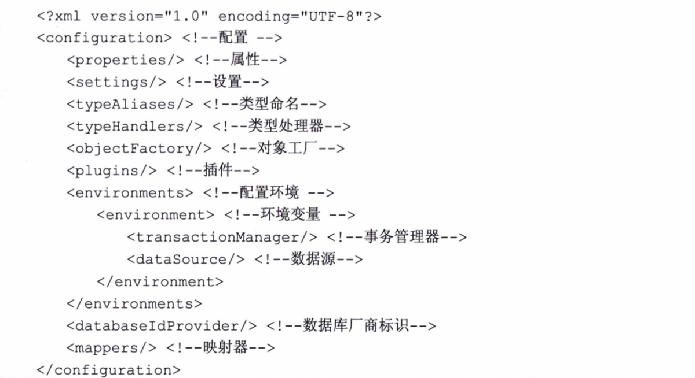
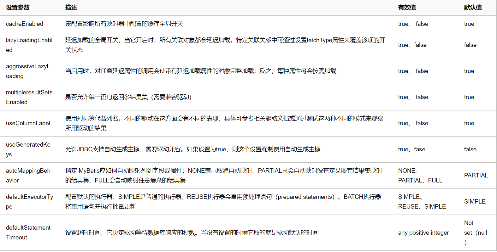

下图展示了mybatis-config.xml的全部配置元素

properties是一个配置属性的元素，让我们能在配置文件的上下文中使用它，MyBatis提供3种配置方式。
property子元素。
<property name="driver" value="com.mysql.jdbc.Driver"/>properties配置文件。
一般情况下，我们会使用一个单独的properties配置文件来配置属性值，以方便我们在多个配置文件中重复使用它们，也方便日后维护和随时修改。我们可以通过${key}的形式，取出在配置文件中配置的值。
<configuration>
<!-- 引入配置文件 -->
<properties resource="datasource.properties"/>
<environments default="dev">
<environment id="dev">
<transactionManager type="JDBC"/>
<dataSource type="POOLED">
<!-- 使用配置文件中的属性 -->
<property name="driver" value="${driver}"/>
<property name="url" value="${url}"/>
<property name="username" value="${username}"/>
</dataSource>
</environment>
</environments>
</configuration>SqlSessionFactoryBuilder使用Properties文件构建。
出于安全考虑，properties配置文件中的账号密码等元素可能是加密的，这个时候就需要对加密的元素进行处理。
public static void func() throws Exception {
Properties properties = new Properties();
properties.load(Resources.getResourceAsStream("datasource.properties"));
// 对原账号密码解密
properties.setProperty("username", decode(properties.getProperty("username")));
properties.setProperty("password", decode(properties.getProperty("password")));
InputStream is = Resources.getResourceAsStream("mybatis-config.xml");
// SqlSessionFactoryBuilder可以使用一个InputStream和一个Properties构建SqlSessionFactory
SqlSessionFactory sqlSessionFactory = new SqlSessionFactoryBuilder().build(is, properties);
}settings（设置）在MyBatis中是最复杂的配置，它会改变 MyBatis 运行时的行为。

别名（typeAliases）是一个指代的名称。因为我们遇到的类全限定名过长，所以我们希望用一个简短的名称去指代它，而这个名称可以在MyBatis上下文中使用，在 MyBatis中别名是不分大小写的。一个 typeAliases的实例是在解析配置文件时生成的，然后长期保存在 Configuration对象中，这样就没有必要运行的时候再次生成它的实例了。
系统定义的别名
通过org.apache.ibatis.type.TypeAliasRegistry可以查看所有系统定义的别名，主要是基本数据类型、字符串、基本数据类型数组、日期、容器类。
通过XML自定义别名
在mybatis-config.xml中通过<typeAliases>元素可以自定义别名。
<typeAliases>
<typeAlias type="com.zl.domain.UserDomain" alias="user"/>
</typeAliases>通过注解的方式自定义别名
在mybatis-config.xml中添加package扫描包
<typeAliases>
<package name="com.zl.domain"/>
</typeAliases>@Alias("user")
public class UserDomain {
}当配合上面的配置，MyBatis就会自动扫描包，将扫描到的类装载到上下文中。如果配置了包扫描的路径，而没有注解@Alias的类也会被MyBatis装载，MyBatis会自动把类名的第一个字母变为小写，作为MyBatis的别名。
typeHandler为类型处理器。MyBatis在预处理语句（PreparedStatement）中设置一个参数或者从结果集（ResultSet）中取出一个值时，都会用注册了的typeHandler进行处理。typeHandler常用的配置为Java类型（javaType）、JDBC类型（jdbcType）。typeHandler的作用就是将参数从javaType转化为 jdbcType，或者从数据库取出结果时把jdbcType转化为javaType。
具体详见：Mybatis类型转换介绍 TypeHandler
当MyBatis在构建一个结果返回的时候，都会使用ObjectFactory（对象工厂）去构建POJO，我们可以定制自己的对象工厂。MyBatis中默认的ObjectFactory是由DefaultObjectFactory来提供服务的。
<environments default="dev">
<environment id="dev">
<transactionManager type="JDBC"/>
<dataSource type="POOLED">
<property name="driver" value="${driver}"/>
<property name="url" value="${url}"/>
<property name="username" value="${username}"/>
</dataSource>
</environment>
</environments>